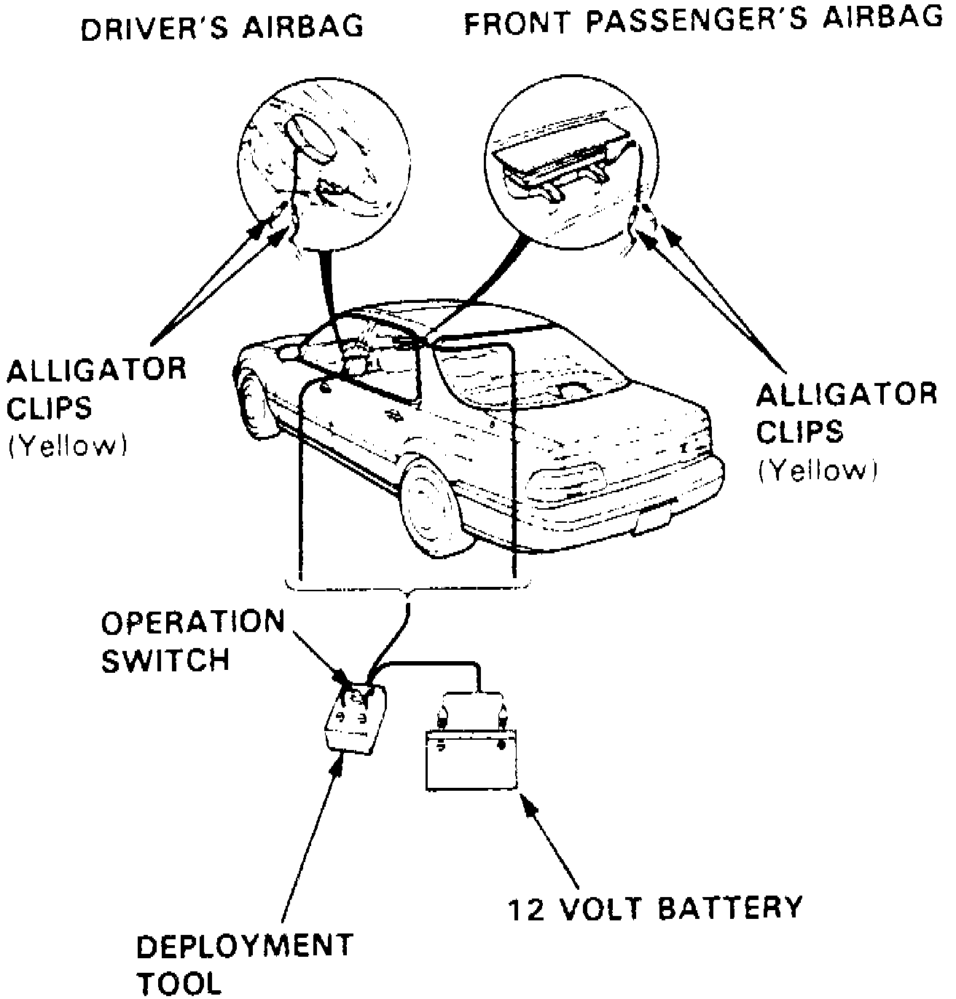

Airbag Deployment and Disposal (Inside Vehicle)
This procedure should only be performed if vehicle is to be scrapped. Ensure air bag is securely mounted to steering wheel prior to deployment.1. Disconnect battery negative cable, then positive cable.
2. Perform air bag deployment tool inspection as outlined in this section.
3. To prepare driver's side air bag for deployment, proceed as follows:
a. Remove air bag maintenance cover from steering wheel.
b. Disconnect air bag electrical connector from cable reel electrical connector.
c. Using suitable wire cutters, remove air bag electrical connector. Strip insulation from ends of air bag electrical leads.
4. To prepare passenger's side air bag for deployment, proceed as follows:
a. Remove glove compartment.
b. Disconnect air bag electrical connector from SRS main wiring harness electrical connector.
c. Using suitable wire cutters, remove air bag electrical connector. Strip insulation from ends of air bag electrical leads.
5. Position deployment tool 30 feet away from vehicle.
Fig. 32 Air Bag Deployment Inside Vehicle:

6. Connect alligator clips of deployment tool yellow leads to air bag electrical leads from which electrical connector was removed, Fig. 32.
7. At a distance of 30 feet from vehicle, connect deployment tool to a fully charged 12 volt battery.
8. If green lamp on tool is illuminated, air bag igniter circuit is defective and air bag assembly cannot be deployed. Consult Acura for instructions on air bag disposal.
9. If red lamp on tool is illuminated, depress tool deployment button. Deployment is evidenced by a loud noise and rapid inflation of air bag assembly, then air bag assembly should slowly deflate. After deployment, the tool green lamp should illuminate. During deployment, air bag assembly components will become excessively hot. After air bag has been deployed, wait at least 30 minutes before handling any components.
10. If air bag assembly did not deploy when tool deployment button was depressed and the green lamp on tool becomes illuminated, air bag igniter circuit is defective and air bag assembly cannot be deployed. Consult Acura for instructions on air bag disposal.